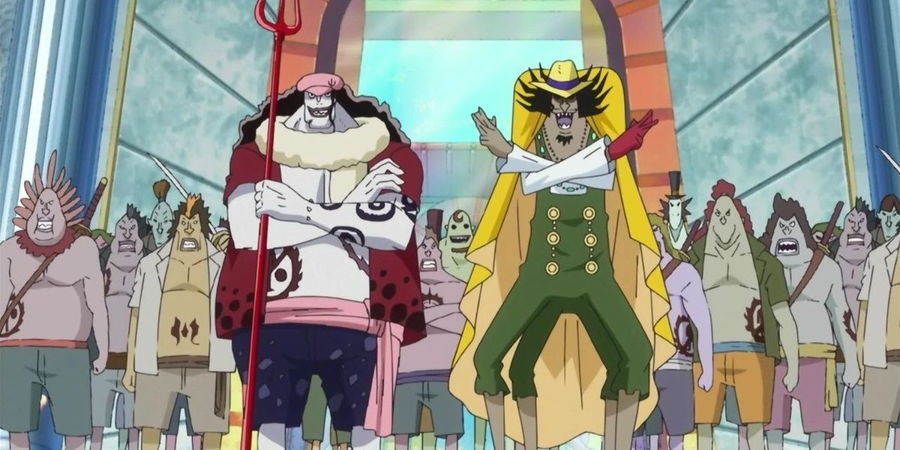
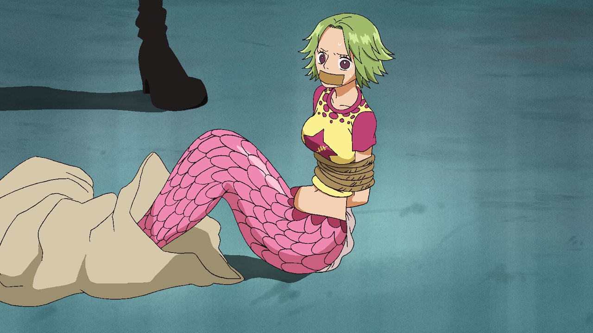
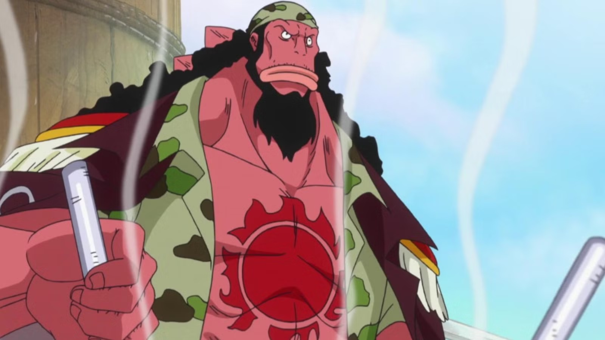
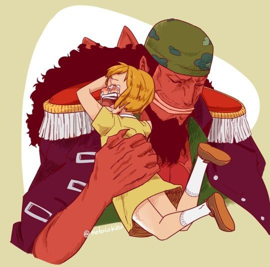
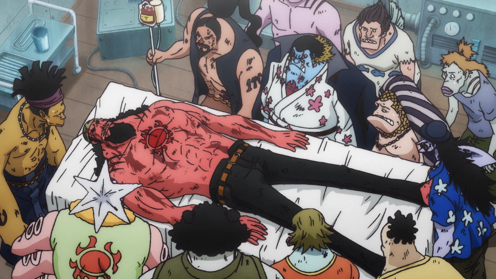
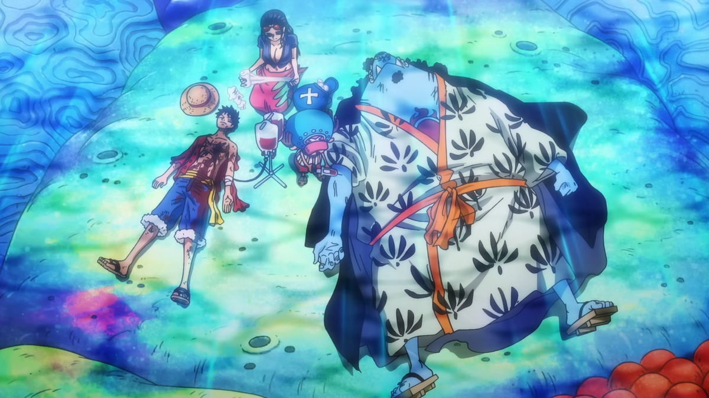

One Piece: A Ilha dos Tritões é uma alegoria perfeita sobre o racismo

O arco da Ilha dos Tritões é frequentemente visto como um 'obstáculo' em One Piece. Uma saga longa que serve apenas para mostrar o poder dos Chapéus de Palha após o timeskip. Se você pensa assim, com todo respeito, você não poderia estar mais errado.
Por trás das lutas 'fáceis' e da comédia, Eiichiro Oda estava fazendo algo muito mais corajoso: ele escreveu uma das alegorias mais complexas e dolorosamente precisas sobre o racismo vistas em um mangá shounen. Este não é um arco sobre derrotar um vilão genérico; é um arco sobre o ciclo vicioso do ódio, o peso do trauma geracional e a dificuldade de sonhar com a integração em um mundo que te rejeita.
O Ciclo do Ódio
O grande vilão do arco, Hody Jones, parece ser uma cópia de Arlong à primeira vista. A gente espera que a motivação dele seja uma vingança brutal por algo terrível que os humanos fizeram a ele ou à sua família. Mas a grande virada, e o ponto genial do Oda, é quando Hody revela sua "motivação": não existe nenhuma.
Hody Jones é um vilão oco, vazio. Ele nunca foi escravizado ou atacado por humanos. Ele é o produto de um ambiente; um receptáculo do ódio que já existia na ilha. Ele cresceu ouvindo as histórias de raiva do Fisher Tiger e a fúria do Arlong, e escolheu idolatrar apenas a parte violenta, sem entender a dor ou o trauma que a originou. Hody é a personificação do próprio ciclo de ódio — um ódio que se alimenta de si mesmo, envenenando a nova geração sem precisar de uma nova justificativa para existir.
O Estopim em Sabaody: A Primeira Resposta de Luffy
Mas o ódio de Hody Jones não é a primeira vez que os Chapéus de Palha encontram esse preconceito. O primeiro confronto de Luffy com essa opressão não foi na Ilha dos Tritões, mas no Arquipélago de Sabaody, e é ali que a 'alegoria' se torna brutalmente real.
Quando Keimi, a sereia, é sequestrada e colocada à venda em um leilão de escravos, ela deixa de ser uma pessoa e se torna um 'item' para os Dragões Celestiais. A reação de todos no leilão é de medo e paralisia. Hachi, um tritão, se ajoelha e implora para Luffy não fazer nada, sabendo que qualquer reação significa a morte. Ele está paralisado pelo trauma que Fisher Tiger e Otohime também conheceram.
Mas Luffy não conhece esse trauma. Assim como na conclusão, a lógica dele é simples e direta. Ele não ataca o Dragão Celestial por uma questão política; ele o ataca porque ele fez seu amigo Hachi chorar e tratou Keimi como um objeto. Aquele soco, que chocou o mundo, é a primeira vez que Luffy declara guerra, pessoalmente, ao sistema que Otohime e Fisher Tiger tentaram combater de outras formas.
A Resposta de Otohime e Fisher Tiger: O "Sonho" e a "Luta"
Enquanto Hody chafurdava no ódio herdado, o arco nos mostra as duas grandes respostas à opressão, e a alegoria de Oda com o mundo real é muito clara: Otohime e Fisher Tiger são, essencialmente, as representações de Martin Luther King Jr. e Malcolm X.

A Rainha Otohime é o Martin Luther King Jr. da história. Ela representa o "sonho" da integração pacífica. Ela é a personificação do idealismo, talvez até ingênuo, mas incrivelmente corajoso. Ela acredita na diplomacia, na educação das crianças e na possibilidade de coexistência, mesmo que isso signifique implorar e se colocar em risco diante dos Dragões Celestiais (os "nobres mundiais" que vivem acima da lei e são os principais perpetuadores da escravidão na obra), os maiores símbolos da opressão. Otohime luta pelo futuro, acreditando que a próxima geração quebraria o ciclo. E, em um paralelo trágico com MLK, seu 'sonho' foi interrompido pela violência. No exato momento em que ela obteve sucesso (conseguindo as assinaturas e até o apoio de um Dragão Celestial), ela foi assassinada. O mais cruel é que seu assassino foi Hody Jones, um tritão, que matou a rainha e culpou um humano. Ele sabotou a paz de Otohime justamente para que o ciclo de ódio continuasse.
Do outro lado, temos Fisher Tiger, o Malcolm X dos tritões. Ele representa a libertação pela força e o trauma que consome. Seu ato heroico de escalar a Red Line e invadir Mary Geoise (a capital do Governo Mundial, localizada no topo do continente-muralha da Red Line, um feito considerado impossível) para libertar escravos de todas as raças é lendário. Mas seu ato foi além da libertação física. Para apagar a "Marca do Dragão Celestial" — o ferro quente que marcava todos os escravos — Tiger criou um novo símbolo. Ele marcou a si mesmo e a todos os escravos libertos com a "Marca do Sol", transformando um símbolo de vergonha e propriedade em um de liberdade e fraternidade: os Piratas do Sol.
Mas esse ato, embora heroico, terminou em tragédia. Anos depois, Tiger fez um último gesto de boa vontade: ele resgatou a jovem humana Koala, uma ex-escrava tão traumatizada que limpava o chão para não ser morta. Durante a viagem, Tiger e sua tripulação mostraram à menina que nem todos os tritões eram monstros. Koala, representando a "nova geração" que Otohime defendia, reaprendeu a confiar e a sorrir.
No entanto, o povo da ilha de Koala — os adultos — com medo e preconceito, o traiu e chamou a Marinha. Tiger foi emboscado e mortalmente ferido. É no leito de morte, precisando de uma transfusão de sangue humano para sobreviver, que ele faz a confissão mais dolorosa do arco: ele admite que, apesar de tudo, não consegue superar o "demônio" em seu coração. Ele rejeita o sangue "impuro" dos humanos. Fisher Tiger morre preso a esse ciclo, provando que o preconceito, no final, "envenenou" até mesmo o herói.
Conclusão: A Resposta de Luffy
Se Otohime representa o idealismo e Fisher Tiger o trauma, Luffy e os Chapéus de Palha representam a ação direta e a amizade. Eles são a terceira via que quebra o ciclo.
Luffy não se importa com a complexidade política entre humanos e tritões. Ele não faz grandes discursos sobre integração e nem se prende às dores do passado. A lógica dele é muito mais simples: "Estes são meus amigos, e eu vou acabar com quem está fazendo eles sofrerem".
Ao derrotar Hody Jones — o ódio vazio — Luffy não está "resolvendo o racismo" magicamente. O que ele faz é destruir o sintoma mais violento desse ódio, permitindo que a esperança de Otohime, carregada por Shirahoshi e Jinbe, tenha espaço para respirar. Ele não luta "pelos tritões"; ele luta por Jinbe, por Hachi, por Keimi e por Shirahoshi. A resposta de Oda para um problema sistêmico e complexo como o ódio não é uma solução política, mas uma solução pessoal.
E essa solução pessoal tem seu clímax no momento mais simbólico de todo o arco. No passado, o herói Fisher Tiger morreu porque seu trauma o impediu de aceitar uma transfusão de sangue humano. No presente, Luffy, um humano, está morrendo por perda de sangue após a batalha. Em uma quebra de todos os taboos, é Jinbe, um tritão, que se oferece e doa seu sangue para salvar o capitão.
O "sangue impuro" que Tiger temia se torna o "sangue da vida" que une as duas raças em Luffy. A Ilha dos Tritões nos ensina que ciclos de ódio não são quebrados com mais ódio (Tiger) ou apenas com palavras (Otohime), mas com conexões genuínas — e, no caso de Luffy e Jinbe, uma conexão que se torna, literalmente, de sangue.